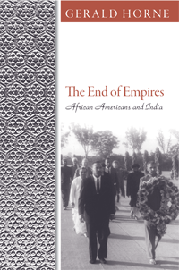

<body bgcolor="#FFFFFF" text="#000000" link="#0000FF" vlink="#CC0000" alink="#CC0000"><center><hr width="350" size="1" align="center" noshade>A trailblazing book that details the close historic ties between Black America and India over the decades<hr width="350" size="1" align="center" noshade><p><a href="https://cdcshoppingcart.uchicago.edu/Cart/ChicagoBook.aspx?ISBN=9781592138999&&PRESS=temple" target="_top">Buy this book!</a> | <a href="https://cdcshoppingcart.uchicago.edu/Cart/Cart.aspx?PRESS=temple" target="_top">View Cart</a> | <a href="https://cdcshoppingcart.uchicago.edu/Cart/Cart.aspx?PRESS=temple" target="_top">Check Out</a></p><p></p></center><!--none//--><h1>The End of Empires</h1>
<H2>African Americans and India</H2>
<h3>Gerald Horne</h3>
<P>cloth 1-59213-899-3 $60.50, Aug 08, <FONT COLOR=#990033>Available</FONT>
<br>paper 1-59213-900-0 $30.95, Sep 09, <FONT COLOR=#990033>Available</FONT>
<br>Electronic Book 1-59213-901-9 $30.95 <FONT COLOR=#990033>Available</FONT>
<BR> 274 pp
6x9
7&nbsp;halftones
</P><BLOCKQUOTE><I>"Gerald Horne has done it again. Adding to a remarkable body of work on the linked fate of ‘worlds of color,’ he convincingly demonstrates how enduring ties of imagination, affiliation and political aspiration conjoined Black America and India in the acceleration of global struggles against racism and colonialism in the first half of the twentieth-century. Not only does Horne once again illuminate the irreducibly international contours of African American history, he also makes an indispensable contribution to writing global history from the ‘bottom-up’."</I>
<BR>&#151<B>Nikhil Pal Singh</B>, Associate Professor of History, University of Washington, and author of <i>Black Is a Country: Race and the Unfinished Struggle for Democracy</i></I></BLOCKQUOTE>
<P>Martin Luther King Jr.’s adaptation of Gandhi’s doctrine of nonviolent resistance is the most visible example of the rich history of ties between African Americans and India. In <I>The End of Empires</I>, Gerald Horne provides an unprecedented history of the relationship between African Americans and Indians in the period leading up to Indian independence in 1947.</P>
<P>Recognizing their common history of exploitation, Horne writes, African Americans and Indians interacted frequently and eventually created alliances, which were advocated by W.E.B. Du Bois, among other leaders. Horne tells the fascinating story of these exchanges, including the South Asian influence on the Nation of Islam and the close friendship between Paul Robeson and India’s first prime minister, Jawaharlal Nehru. Based on extensive archival research in India, the United States and the United Kingdom, <I>The End of Empires</I> breaks new ground in the effort to put African American history into a global context.</P>
<BR>&nbsp;<h2>Excerpt</h2><P>Excerpt available at <a href="http://www.temple.edu/tempress">www.temple.edu/tempress</a></p>
<BR>&nbsp;<h2>Reviews</h2>
<p><i>"Gerald Horne's book is full of surprising tales of how the fates of America's Jim Crow Empire of segregation and British Empire in India were braided together. Well-written and amply documented </i>The End of Empires<i> is an original contribution to the little-known history of global linkages between two colored peoples struggling for liberation. A must-read for anybody interested in the history of race relations."</i> <br>&#151<b>Nayan Chanda</b>, Director of Publications, Yale Center for the Study of Globalization, and the author of <i>Bound Together: How Traders, Preachers, Adventurers and Warriors Shaped Globalization</i>
<p><i>"Timely and important, this is an outstanding contribution to scholarship in ethnic studies, African American history, U.S. history, and postcolonial studies. Gerald Horne excavates many layers of African American cultural and social history, the history of colonialism in India, the slave trade, and contemporary South Asian immigration to the United States. He has created a compelling and original narrative. No one else has come close to telling this story in this way."</i> <br>&#151<b>Bill V. Mullen</b>, Director of American Studies, Purdue University
<p><i>"Readers interested in African-American history, race relations and anticolonialist movements will find Horne’s book…an informative and useful exploration of fresh territory."
</I><br>&#151<b><I>Publishers Weekly</I></b>
<p><i>"Each of [his] books is valuable simply for the immense archival labors put into them: Horne has opened a continent of research for scholars who are interested in each of these zones. Few would have thought to use the archives in New Delhi or in Hong Kong to help illuminate the worlds of African-Americans.... [He] evoke[s]...the feeling of internationalism that came out of a century of objective links and subjective connections. Horne's super book shows us what was, with the hope that if the objective basis exists this kind of solidarity might be reaffirmed. It is a powerful historical and political vision."</I><br>&#151<b><I>Reviews in History</I></b>
<p><i>"[E]legantly written [and] thought-provoking.... [Horne's] analysis...expands the scope of the African American relationship with India by examining a broader span of time than the post World War II period, beginning the book with a fascinating examination of how the slave-based cotton economy of the American South was paralleled by and intertwined with the development of cotton production in Britain's colony in India.... [T]his is an important book that raises some hard but significant questions about African Americans, the international sphere, and the issues of race, domination, and the struggle for freedom of oppressed people everywhere."
</I><br>&#151<b><I>The Journal of American History</I></b>
<p><i>"Gerald Horne's most recent book, </i>The End of Empires: African Americans and India<i>, tells a neglected story of racism, war and international solidarity. Horne outlines the mutually beneficial self-interest between African Americans and Indians in the struggle against racism, and how this self-interest not only spanned the oceans, but blossomed through the course of World War II and paved the way for both the Civil Rights Movement and the Indian Independence Movement.... Horne's book unfolds with insight and skill. In </i>The End of Empires<i> the emperor has no clothes, as British colonialism and US Racism are laid bare. I have touched on only a few of the insights that </i>The End of Empires<i> has to offer. Needless to say, Horne's new book is another great work by one of today's most prolific and respected historians."
</I><br>&#151<b><I>Political Affairs</I></b>
<p><i>"Horne makes his case through extensive research in American, Indian, and British archives and manuscript collections and an exhaustive study of secondary sources. The book forms part of this prolific author's expanding oeuvre.... Horne's book is part of a growing body of literature that reinserts popular struggles into the narrative of world history. Richly documented , engagingly written, and attractively presented, this work helps to erase some of the arbitrary boundaries between subfields and provides a fresh look at the past."
</I><br>&#151<b><I>The American Historical Review </I></b>
<p><i>"This scholarly study investigates aspects of Indian and African American histories that have been totally unexplored till to date. Gerald Horne charts the growth of political and social relationships between African Americans and Indians from the 1880s to 1947 when India gained its independence....This book should be read by both African Americans and Indians in order to learn about their own past and their common struggle."
</I><br>&#151<b><I>Pacific Historical Review</I></b>
<p><i>"Horne has done an enormous service in illuminating the anti-imperialism at the heart of black America’s struggle. He has also, in the course of this, brought to light a myriad of class, gender, national and caste issues that intersected with this story.... Horne has written another powerful ‘history from below,' as it were, in which the main agents of liberation are the oppressed themselves. Their stories, and their ideas, are so infrequently told that one can only welcome the fact that such a gifted historian as Horne has chosen to relate them."</i> <br>&#151<b><i>Ready Steady Book</i></b>
<p><i>"Horne's book painstakingly details the myriad connections—both superficial and deep—between African Americans and East Indians.... Horne's book is a valuable addition to the discourse on the longstanding and under-examined relationship between African Americans and India."
</I><br>&#151<b><I>The Journal of African American History</I></b>
<p><i>"Gerald Horne's </i>End of Empires<i> is an impressive work of connective history, immaculately researched and marked by sensitivity for the interweaving of the African American civil rights struggle with Indian anti-colonialism and it poses important questions about the development of twentieth-century nation-states…. Horne’s research is extensive and deep, scouring some of the most dimly lit corners of American, British, and Indian archives for both the minutiae and the gestalt of political and social relations between Indians and African Americans…. One of the most valuable insights of Horne’s study is the assertion that framing connective histories in terms of ‘cross-cultural’ or ‘trans-cultural’ relations alone might prevent us from probing the deeper significance of these interactions. In fact, the changing contexts of international and domestic political struggle, as well as economic conditions, are salient frameworks for understanding relations between Indian and black activists…. Horne’s work does a fine job of grappling with the starkly different social and political locations of Indians and African Americans."
</I><br>&#151<b><I>Journal of Global History</I></b>
<BR>&nbsp;<h2>Contents</h2><P>
<br>Introduction
<br>1. Passage to&#8212;and from&#8212;India
<br>2.The Color Line
<br>3. Revolution?
<br>4. Not Quite "White"
<br>5. Black America in India
<br>6. Mission to India
<br>7. India and Black America
<br>8. The United States versus India
<br>9. Race War!
<br>10. African Americans Waging War in India
<br>11. Toward Independence and Equality
<br>12. Toward Equality/Beyond Independence
<br>13. The End of Empires
<br>Notes
<br>Index
</P><BR>&nbsp;<H2>About the Author(s)</H2>
<P><B>Gerald Horne</B>, Moores Professor of History and African-American Studies at the University of Houston, is the author of many books including <I>Black and Brown: African-Americans and the Mexican Revolution, 1910-1920</I>, <I>The Deepest South: The United States, Brazil, and the African Slave Trade</I>, and <I><a href="1907_reg.html" target="_top">Cold War in a Hot Zone: The United States Confronts Labor and Independence Struggles in the British West Indies</i></a> (Temple).</P>
<BR><H2>Subject Categories</H2>
<p><A HREF="/tempress/african.html" TARGET="_top">African American Studies</a>
<BR><A HREF="/tempress/history.html" TARGET="_top">History</a>
<BR><A HREF="/tempress/asian.html" TARGET="_top">Asian Studies</a>
</p>
<p align="center"><a href="https://cdcshoppingcart.uchicago.edu/Cart/ChicagoBook.aspx?ISBN=9781592138999&&PRESS=temple" target="_top">Buy this book!</a> | <a href="https://cdcshoppingcart.uchicago.edu/Cart/Cart.aspx?PRESS=temple" target="_top">View Cart</a> | <a href="https://cdcshoppingcart.uchicago.edu/Cart/Cart.aspx?PRESS=temple" target="_top">Check Out</a></p><p><font face="Arial" size="1"><a href="copyright.html" onMouseOver="window.status='Web Copyright Policy';return true;" onMouseOut="window.status=''" title="Web Copyright Policy">&copy;</a> 2015 <a href="http://www.temple.edu" target="new" onMouseOver="window.status='Link to Temple University home page';return true;" onMouseOut="window.status=''" title="Link to Temple University home page">Temple University</a>. All Rights Reserved. http://www.temple.edu/tempress/titles/1967_reg.html</font></p>